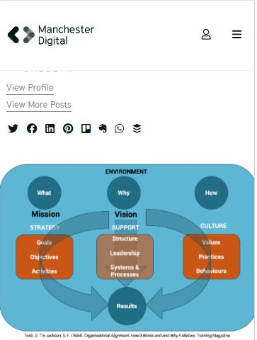

Visual Hierarchy
BAER PERFORMANCE MARKETING
https://baerpm.com/In my observation, I have seen this company use Visual Hararchy to satisfy their customers to have good experience about their website.
Alignment
Manchester Digital
https://ritfeld.github.io/wdd230/lesson2/design-principles.html https://www.manchesterdigital.com/ Organizational alignment is key to any successful business. Alignment helps organizations to function well & to be successful. It brings balance, focuses people on the areas that really matter, makes it possible. This company offers the possibility to help business owners by providing training on how to aligned your business.
White Space Design
Shopify Partners
https://www.shopify.com/partners/
White space design is a principle that most developers overlook, but the company's shopify partners provides training to make company aware because the technology increases everyday to keep users using mobile phone to collect information from the internet. Web designers should have experience width white space design.